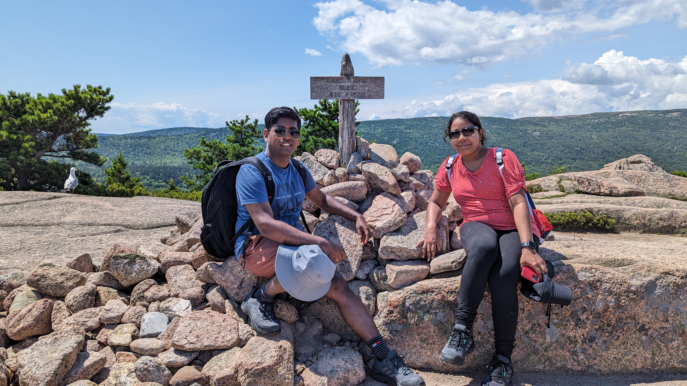

My Travelogue!!!
"Lost in the beauty of unfamiliar places, finding myself in every adventure." From bustling city streets to serene natural wonders, my travelogue serves as a testament to the kaleidoscope of experiences etched into the canvas of my journey. Through the lens of my adventures, the travelogue becomes a passport to my soul, a chronicle of personal growth, and an invitation for others to embark on their own odyssey of discovery.